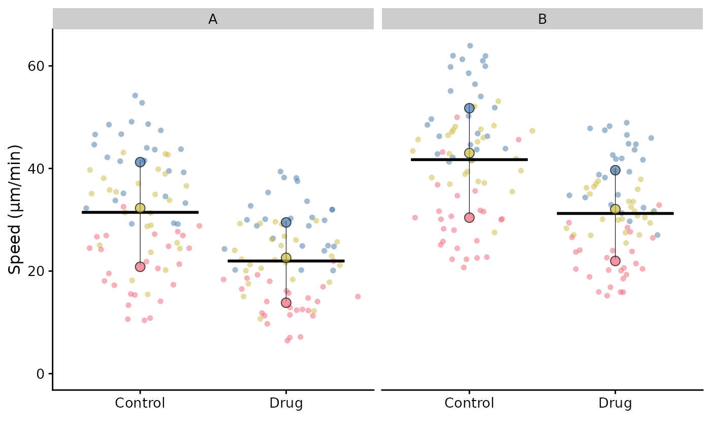
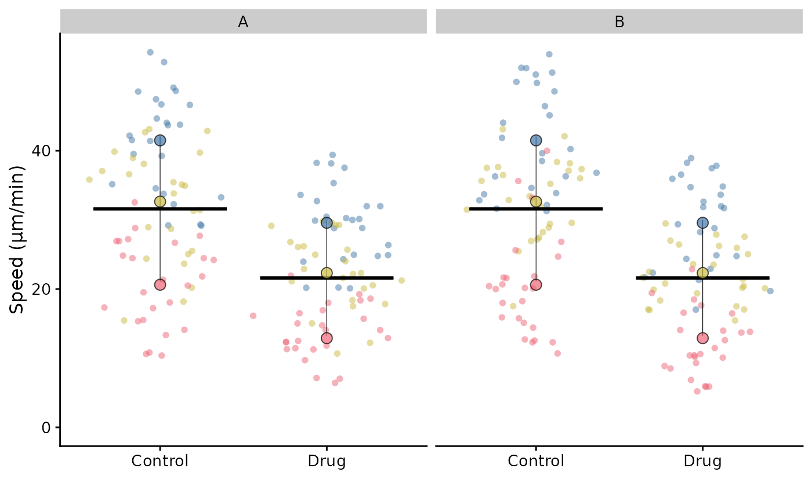
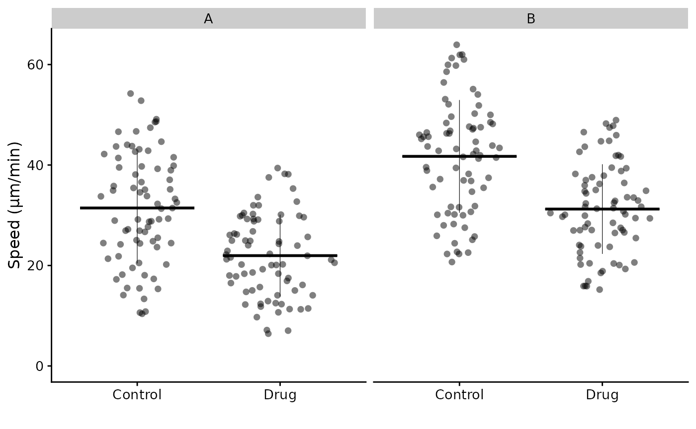
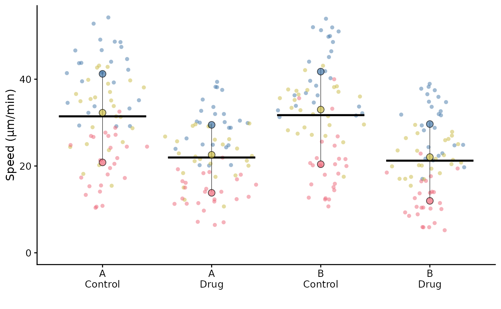
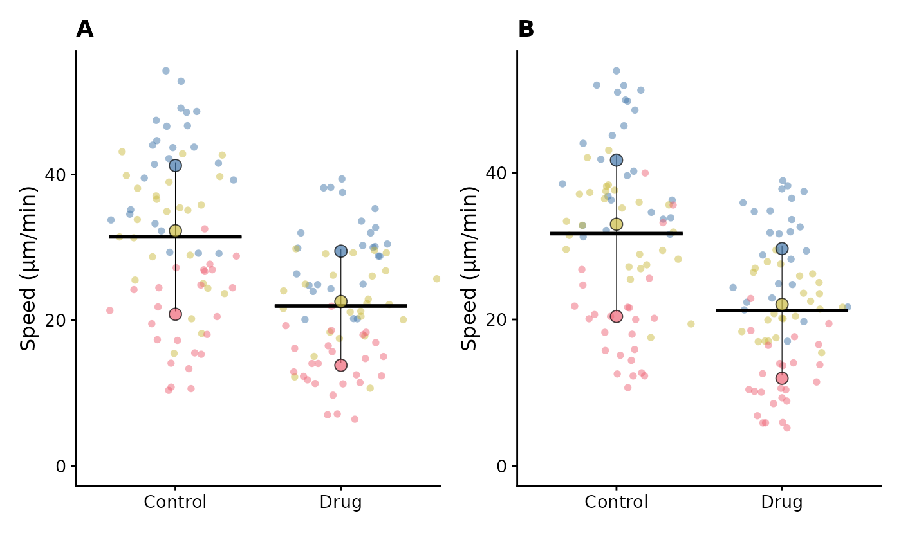

When we “facet” a ggplot, we split the plot into multiple panels based on the values of a categorical variable. This is a common way to compare groups or conditions across different subsets of data.
Faceting is supported for SuperPlots, but the variable for faceting
must be supplied in the superplot() call.
library(SuperPlotR)
# add a variable to facet by to the data frame
df <- cbind(lord_jcb, other = rep(c("A", "B"), 150))
# we'll add 10 to the speed to better demonstrate the faceting
df$Speed[df$other == "B"] <- df$Speed[df$other == "B"] + 10
# facet by the "other" variable
superplot(df, "Speed", "Treatment", "Replicate", facet = "other",
ylab = "Speed (µm/min)")
If we fail to supply the variable for faceting in the
superplot() call, then when the facet function is called
subsequently, the summary points and bars will be incorrect because they
are calculated without the facet variable.
library(ggplot2)
p <- superplot(df, "Speed", "Treatment", "Replicate", ylab = "Speed (µm/min)")
# incorrect output
p + facet_wrap(~ other)
Note: currently facet_wrap() is used as
the option in superplot(), for further enhancement
requests, raise an issue.
For FlatPlots (see vignette("flatplot")), faceting works
without additional arguments.
p <- flatplot(df, "Speed", "Treatment", ylab = "Speed (µm/min)")
p + facet_wrap(~ other)
More complex faceting
In ggplot, it is possible to facet by multiple variables.
This is not currently supported in SuperPlotR. Some solutions are listed below:
Combine faceting variable(s) with the condition variable
Manually combine the condition column with one or more faceting
variables to create a new variable that can be used as the condition
variable in superplot().
df_2 <- df |>
dplyr::mutate(Treatment_other = paste(other, Treatment, sep = "\n"))
superplot(df_2, "Speed", "Treatment_other", "Replicate",
ylab = "Speed (µm/min)")
In the case of two faceting variables, one could be combined with the condition variable and the other could be used for faceting.
Manually generate multiple SuperPlots and combine them
Make a SuperPlot for each category, i.e. after filtering the data frame for A and B, and then combine them using patchwork or similar package.
library(patchwork)
fct <- unique(df$other)
do.call(wrap_plots, c(lapply(seq_along(fct), function(i) {
this_facet <- fct[i]
p <- superplot(df |>
dplyr::filter(other == this_facet),
"Speed", "Treatment", "Replicate",
ylab = "Speed (µm/min)")
p <- p + labs(title = this_facet)
return(p)
}), ncol = 2)) -> p_combined
p_combined
In this simple case we only have two categories, but this approach can be extended to more categories and multiple faceting variables.